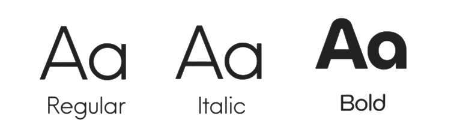
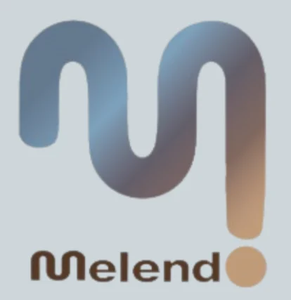
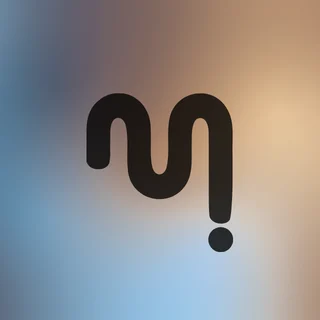
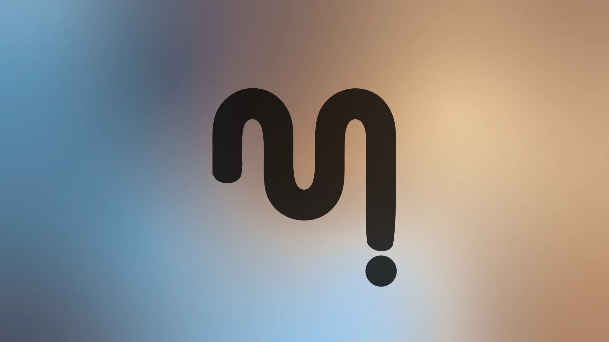

Identidad visual y web para Melendo, la marca de Daniel, desarrollador full-stack freelance.
Visual identity and website for Melendo, the brand of Daniel, a freelance full-stack developer.
- IdentidadIdentity
- Web
- ES / EN

- Sector
- Desarrollo de software a medidaCustom software development
- AñoYear
- 2026
- Mi rolMy role
- Identidad visual y diseño web.Visual identity and web design.
- EntregablesDeliverables
- Logotipo, paleta, tipografía y web bilingüeLogo, palette, typography and bilingual website
El retoThe challenge
Melendo es la marca de Daniel, desarrollador full-stack. La web tenía que presentar cuatro áreas muy distintas (frontend, backend, un PMS para hostelería e IA aplicada) como un mismo oficio, y hacerlo con carácter propio.Melendo is the brand of Daniel, a full-stack developer. The website had to present four very different areas (frontend, backend, a hospitality PMS and applied AI) as one craft, with a character of its own.
TipografíaTypography

Paleta de colorColour palette
#496977#AC6532#CED6DA#FFF9F2#493220


ProcesoProcess
- Cuatro mundos, un mismo oficioFour worlds, one craft
Cada área tiene su propia escena: una superficie vibrante para el frontend, un descenso por capas para el backend, el libro de una posada para el PMS y una conversación entre dos agentes para la IA.Each area gets its own scene: a vibrant surface for frontend, a descent through layers for backend, an inn’s ledger for the PMS and a conversation between two agents for AI.
- Interacción con intenciónInteraction with intent
Pantalla de carga, cursor propio, sonido opcional y contenidos que aparecen al hacer scroll.Loading screen, custom cursor, optional sound and content that reveals on scroll.
- Bilingüe desde el inicioBilingual from the start
Toda la web en español e inglés, con cambio de idioma instantáneo.The whole site in Spanish and English, with instant language switching.